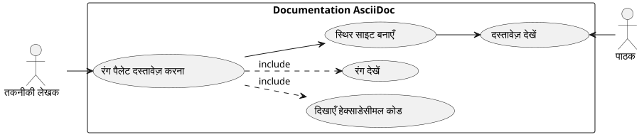

AsciiDoc में रंगीन वर्ग दिखाएँ: व्यावहारिक मार्गदर्शिका
Publié le 01 November 2025
- परिचय
- समस्या
- Bake (generate) the site jbake -b
- Bake and serve locally jbake -b -s
- Bake and watch for changes jbake -b --reset
- Specify source and destination jbake source_folder output_folder
- Clear the output directory before baking jbake -b . output --reset
`
परिचय
तकनीकी दस्तावेज़ लिखते समय, विशेष रूप से शैली गाइड या उपयोगकर्ता इंटरफ़ेस स्पेसिफिकेशन्स के लिए, अक्सर रंग पैलेट दिखाने की आवश्यकता होती है। AsciiDoc, दस्तावेज़ीकरण के लिए बहुत शक्तिशाली होने के बावजूद, रंग नमूने प्रदर्शित करने के लिए कोई मूल व्याकरण प्रदान नहीं करता है। यह लेख समस्या की पड़ताल करता है और HTML इंजेक्शन पर आधारित एक शालीन समाधान प्रस्तुत करता है।
समस्या
उपयोग का संदर्भ
कल्पना कीजिए कि आप एक वेब एप्लिकेशन थीम के CSS चर को दस्तावेज़ कर रहे हैं। आपको चाहिए :
-
हेक्साडेसिमल रंग कोडों को सूचीबद्ध करें
-
प्रत्येक रंग का दृश्य पूर्वावलोकन दिखाएँ
-
Maintenir la lisibilité du document source
-
JBake जैसे स्थिर साइट जेनरेटर्स के साथ संगतता सुनिश्चित करें

संभावित दृष्टिकोण
एक AsciiDoc दस्तावेज़ में रंग दिखाने के कई समाधान पर विचार किया जा सकता है :
विकल्प 1 : यूनिकोड अक्षर
यूनिकोड अक्षरों के उपयोग के रूप में`■`# JBake CLI Commands ` # Initialize a new JBake project jbake -i
Bake (generate) the site jbake -b
Bake and serve locally jbake -b -s
Bake and watch for changes jbake -b --reset
Specify source and destination jbake source_folder output_folder
Clear the output directory before baking jbake -b . output --reset `
(■) सरल लेकिन सीमित है :
* ■ --accent-color: #7952b3 (violet Bootstrap)Limitations : रंग पर कोई नियंत्रण नहीं, सिस्टम फ़ॉन्ट पर निर्भर।
Option 2 : बाहरी चित्र
प्रत्येक रंग के लिए PNG या SVG छवियाँ बनाएँ:
* image:colors/violet.svg[width=16] --accent-color: #7952b3सीमाएँ : भारी रखरखाव, फ़ाइलों की वृद्धि, स्वचालित समन्वय नहीं।
विकल्प 3 : CSS की कस्टम भूमिकाएँ
CSS क्लासेस परिभाषित करें और उन्हें AsciiDoc भूमिकाओं के माध्यम से लागू करें :
* [.color-violet]##■## --accent-color: #7952b3सीमाएँ : बाहरी स्टाइलशीट की आवश्यकता होती है, सभी संभव रंगों की पूर्व परिभाषा।
विकल्प 4 : HTML इंजेक्शन (चुनी गई समाधान)
मैक्रो का उपयोग करें``इंलाइन शैली के साथ HTML इंजेक्ट करने के लिए :
* pass:[<span style="display:inline-block;width:1em;height:1em;
background:#7952b3;vertical-align:middle;margin-right:0.5em"></span>]
--accent-color: #7952b3 (violet Bootstrap)समाधान: HTML इन्जेक्शन के साथ
कार्य करने का सिद्धांत
मैक्रो``AsciiDoc कच्ची सामग्री डालने की अनुमति देता है जिसे AsciiDoc प्रोसेसर द्वारा ज्याख्या नहीं की जाएगी। इससे हमें सीधे HTML को इन्लाइन CSS शैलियों के साथ इंजेक्ट करने की अनुमति मिलती है।
Failed to generate image: PlantUML preprocessing failed: [From <input> (line 5) ] @startuml participant "दस्तावेज़\nAsciiDoc" as doc participant "प्रोसेसर\nAsciiDoc" as processor participant "पास:[] मैक्रो" as pass participant "HTML ^^^^^ Syntax Error? (Assumed diagram type: sequence) @startuml participant "दस्तावेज़\nAsciiDoc" as doc participant "प्रोसेसर\nAsciiDoc" as processor participant "पास:[] मैक्रो" as pass participant "HTML अंतिम" as html doc -> processor : Analyse document processor -> pass : Détecte pass:[] pass -> processor : Retourne HTML brut processor -> html : Insère sans transformation html -> html : Navigateur applique styles @enduml
कार्यान्वयन
यहाँ HTML संरचना डालने के लिए है :
<span style="display:inline-block;
width:1em;
height:1em;
background:#7952b3;
vertical-align:middle;
margin-right:0.5em">
</span>CSS गुणों की व्याख्या
| सम्पत्ति | फ़ंक्शन |
|---|---|
|
इंलाइन प्रवाह में बने रहते हुए width/height सेट करने की अनुमति देता है |
|
फ़ॉन्ट के आकार के सापेक्ष वर्ग का आकार (प्रतिक्रियाशील) |
|
दिखाने वाला रंग (आपकी आवश्यकतानुसार परिवर्तनीय) (आपकी) |
|
वर्ग को सन्निहित पाठ के साथ संरेखित करें |
|
वर्ग और टेक्स्ट के बीच की दूरी |
उदाहरण पूरा
यहाँ एक उदाहरण है जो एक थीम पैलेट का दस्तावेज़ीकरण करता है :
== Thème Clair
* pass:[<span style="display:inline-block;width:1em;height:1em;background:#f8f9fa;border:1px solid #ccc;vertical-align:middle;margin-right:0.5em"></span>] --bg-primary: `#f8f9fa` (blanc cassé)
* pass:[<span style="display:inline-block;width:1em;height:1em;background:#212529;vertical-align:middle;margin-right:0.5em"></span>] --text-primary: `#212529` (noir très foncé)
* pass:[<span style="display:inline-block;width:1em;height:1em;background:#7952b3;vertical-align:middle;margin-right:0.5em"></span>] --accent-color: `#7952b3` (violet Bootstrap)
* pass:[<span style="display:inline-block;width:1em;height:1em;background:#61428f;vertical-align:middle;margin-right:0.5em"></span>] --accent-hover: `#61428f` (violet plus foncé)
* pass:[<span style="display:inline-block;width:1em;height:1em;background:#ffffff;border:1px solid #ccc;vertical-align:middle;margin-right:0.5em"></span>] --card-bg: `#ffffff` (blanc)निम्नलिखित रेंडर कौन उत्पन्न करता है:
लाइट थीम
-
--bg-primary:`#f8f9fa`(ऑफ़ व्हाइट)
-
--text-primary:`#212529`(बहुत गहरा काला)
-
--accent-color:`#7952b3`(Bootstrap बैंगनी)
-
--accent-hover:`#61428f`(गहरा बैंगनी)
-
--card-bg:`#ffffff`(सफ़ेद)
अनुकूलन और सर्वोत्तम प्रथाएँ
हल्के रंगों को प्रबंधित करें
बहुत हल्के रंगों (सफेद, बहुत हल्का ग्रे) के लिए, उन्हें सफेद पृष्ठभूमि पर दृश्यमान बनाने के लिए एक सीमा जोड़ें :
<span style="display:inline-block;width:1em;height:1em;
background:#ffffff;border:1px solid #ccc;
vertical-align:middle;margin-right:0.5em"></span>ग्रे बॉर्डर (border:1px solid #ccc) सफेद पृष्ठभूमि पर सफेद वर्ग को सीमा निर्धारित करने की अनुमति देता है।
वर्गों के आकार को समायोजित करें
आप अपनी आवश्यकताओं के अनुसार वर्गों के आकार को समायोजित कर सकते हैं :
* pass:[<span style="display:inline-block;width:1.5em;height:1.5em;background:#7952b3;vertical-align:middle;margin-right:0.5em"></span>] Grand carré
* pass:[<span style="display:inline-block;width:0.8em;height:0.8em;background:#7952b3;vertical-align:middle;margin-right:0.5em"></span>] Petit carréइकाई का उपयोग`em`यह सुनिश्चित करता है कि वर्ग फ़ॉन्ट के आकार के अनुसार अनुकूलित हो जाते हैं।
वैरिएंट बनाएँ
विशिष्ट आवश्यकताओं के लिए, आप विभिन्न प्रकार के प्रारूप बना सकते हैं :
रंगीन वृत्त
* pass:[<span style="display:inline-block;width:1em;height:1em;background:#7952b3;border-radius:50%;vertical-align:middle;margin-right:0.5em"></span>] Cercle violetरंगीन सीमा वाला वर्ग
* pass:[<span style="display:inline-block;width:1em;height:1em;background:#ffffff;border:3px solid #7952b3;vertical-align:middle;margin-right:0.5em"></span>] Bordure violetteसमाधान आर्किटेक्चर
फ़ायदे और सीमाएँ
फ़ायदे
-
✓ स्वायत्तता : बाहरी फ़ाइलों पर कोई निर्भरता नहीं
-
✓ Portabilité : सभी AsciiDoc प्रोसेसर के साथ काम करता है
-
✓ सिंक्रोनाइज़ेशन : रंग कोड HTML में सीधे है
-
�✓ लचीलापन : पूर्ण शैली अनुकूलन
-
�✓ Maintenance : हेक्साडेसीमल कोड का सरल संशोधन
-
✓ JBake संगतता : पूरी तरह से स्थिर साइट जनरेटरों के साथ काम करता है
सीमाएँ
-
�✗ वाचालता : पुनरावृत्तिपूर्ण HTML कोड AsciiDoc स्रोत में
-
�✗ स्रोत की पठनीयता : स्रोत दस्तावेज़ कम परिष्कृत है
-
एक्सेसिबिलिटी : कोई मूल वैकल्पिक पाठ नहीं (हाथ से जोड़ना होगा)
सुलभता में सुधार
स्क्रीन रीडर्स के लिए वर्गों को सुलभ बनाने के लिए :
* pass:[<span role="img" aria-label="Couleur violet Bootstrap"
style="display:inline-block;width:1em;height:1em;background:#7952b3;
vertical-align:middle;margin-right:0.5em"></span>]
--accent-color: `#7952b3` (violet Bootstrap)विशेषताएँ`role="img"` et `aria-label`वे सहायक प्रौद्योगिकियों को दृश्य सामग्री को समझने और वर्णित करने की अनुमति देते हैं।
वास्तविक उदाहरण : विषयों का दस्तावेज़
यहाँ कई विषयों का दस्तावेज़ करने वाला एक पूर्ण उदाहरण है :
= Guide des couleurs de l'application
== Thème Clair (`:root`)
* pass:[<span style="display:inline-block;width:1em;height:1em;background:#f8f9fa;border:1px solid #ccc;vertical-align:middle;margin-right:0.5em"></span>] --bg-primary: `#f8f9fa` (blanc cassé)
* pass:[<span style="display:inline-block;width:1em;height:1em;background:#212529;vertical-align:middle;margin-right:0.5em"></span>] --text-primary: `#212529` (noir très foncé)
* pass:[<span style="display:inline-block;width:1em;height:1em;background:#7952b3;vertical-align:middle;margin-right:0.5em"></span>] --accent-color: `#7952b3` (violet Bootstrap)
== Thème Sombre (`[data-bs-theme="dark"]`)
* pass:[<span style="display:inline-block;width:1em;height:1em;background:#212529;vertical-align:middle;margin-right:0.5em"></span>] --bg-primary: `#212529` (noir très foncé)
* pass:[<span style="display:inline-block;width:1em;height:1em;background:#ffffff;border:1px solid #999;vertical-align:middle;margin-right:0.5em"></span>] --text-primary: `#ffffff` (blanc)
* pass:[<span style="display:inline-block;width:1em;height:1em;background:#0d6efd;vertical-align:middle;margin-right:0.5em"></span>] --accent-color: `#0d6efd` (bleu Bootstrap)
== Thème Contraste Élevé (`[data-bs-theme="high-contrast"]`)
* pass:[<span style="display:inline-block;width:1em;height:1em;background:#000000;vertical-align:middle;margin-right:0.5em"></span>] --bg-primary: `#000000` (noir)
* pass:[<span style="display:inline-block;width:1em;height:1em;background:#ffffff;border:1px solid #000;vertical-align:middle;margin-right:0.5em"></span>] --text-primary: `#ffffff` (blanc)
* pass:[<span style="display:inline-block;width:1em;height:1em;background:#00ff00;vertical-align:middle;margin-right:0.5em"></span>] --accent-color: `#00ff00` (vert vif)निष्कर्ष
मैक्रो के माध्यम से HTML इंजेक्शन``AsciiDoc एक सुंदर और व्यावहारिक समाधान प्रदान करता है तकनीकी दस्तावेज़ीकरण में रंग के नमूनों को प्रदर्शित करने के लिए। यद्यपि यह थोड़ा शब्दजालपूर्ण है, इस तरीके से अधिकतम पोर्टेबिलिटी और सरलीकृत रखरखाव की गारंटी मिलती है।
यह तकनीक को किसी बाहरी कॉन्फ़िगरेशन या अतिरिक्त स्टाइल शीट की आवश्यकता नहीं है, और यह JBake और सभी मानक AsciiDoc प्रोसेसर के साथ तुरंत काम करती है।
एक बार जब आप अपना पहला रंगीन वर्ग बना लेते हैं, तो बस HTML कोड कॉपी‑पेस्ट करें और हेक्साडेसिमल कोड बदलकर जल्दी से एक पूर्ण पैलेट बनाएं।
यह तकनीक अनुकूलित दृश्य रेंडरिंग की आवश्यकता वाले अन्य उपयोग के मामलों में विस्तारित की जा सकती है: आइकन, बैज, साधारण चार्ट, या किसी भी दृश्य तत्व जिसको शैली के सटीक नियंत्रण की आवश्यकता होती है।
संसाधन
लेख प्रकाशित किया गया 2025-11-01